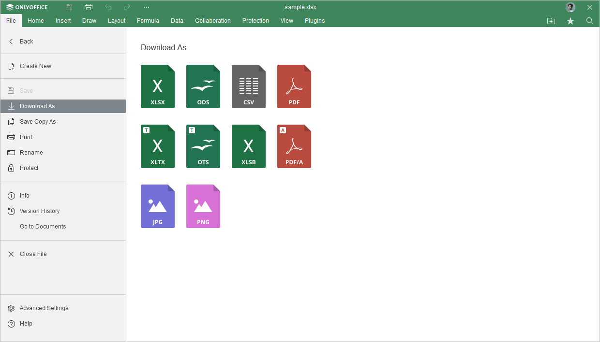
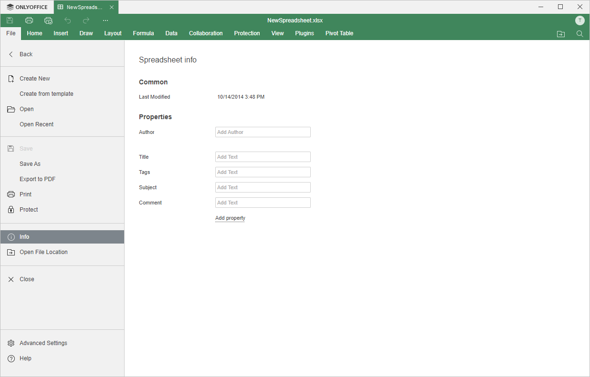

Kartica File
Kartica File u Spreadsheet Editor-u omogućava obavljanje osnovnih operacija sa trenutnom datotekom.
Odgovarajući prozor Online Spreadsheet Editor-a:

Odgovarajući prozor Desktop Spreadsheet Editor-a:

Pomoću ove kartice možete izvršiti sledeće operacije:
- kreirati novu tabelu ili otvoriti nedavno uređivanu (dostupno samo u online verziji),
- u online verziji, sačuvati trenutnu datoteku (u slučaju da je opcija Autosave onemogućena), preuzeti kao (sačuvati tabelu u izabranom formatu na hard disk računara), sačuvati kopiju kao (sačuvati kopiju tabele u izabranom formatu u dokumentima na portalu), odštampati ili preimenovati datoteku, u desktop verziji, sačuvati trenutnu datoteku zadržavajući trenutni format i lokaciju pomoću opcije Save ili sačuvati trenutnu datoteku pod drugim nazivom, na drugoj lokaciji ili u drugom formatu pomoću opcije Save as, odštampati datoteku,
- zaštititi datoteku pomoću lozinke, promeniti ili ukloniti lozinku,
- zaštititi datoteku pomoću digitalnog potpisa (dostupno samo u desktop verziji),
- pregledati opšte informacije o tabeli ili promeniti neka svojstva datoteke,
- pratiti istoriju verzija (dostupno samo u online verziji),
- Go to Documents – u desktop verziji, otvoriti fasciklu u kojoj je datoteka sačuvana u prozoru File Explorer-a, u online verziji, otvoriti fasciklu u modulu Documents u kojoj je datoteka sačuvana, u novoj kartici pregledača,
- pristupiti Naprednim podešavanjima editora,
- Help – otvoriti ugrađeni centar za pomoć.